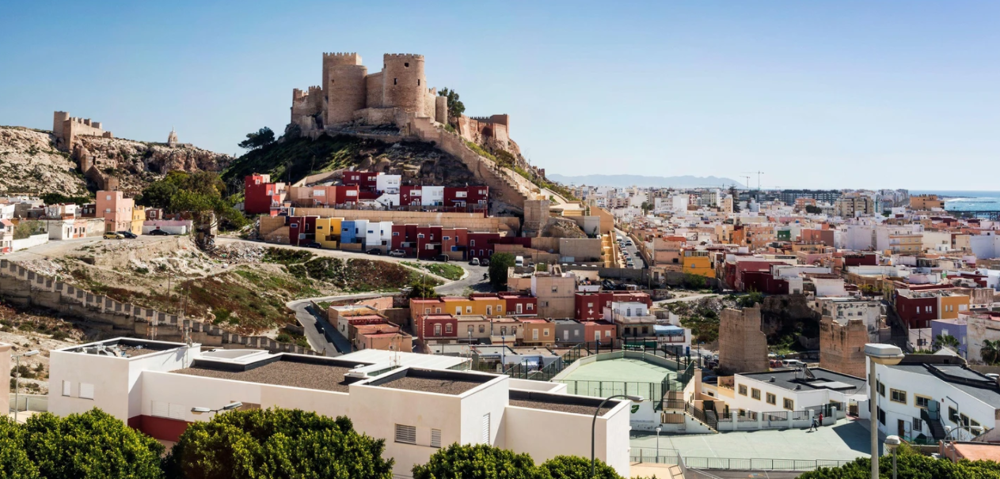
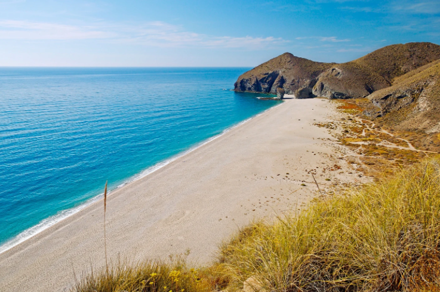
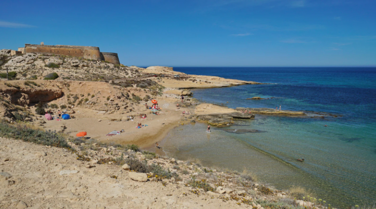

The Alcazaba Fortress
The Alcazaba, with its 1430 m. walled perimeter is Spain’s second largest Muslim construction, after the Alhambra Palace in Granada. It was built at the behest of Abderrahman III in the tenth century after the founding of the city. It is a stronghold which housed three campuses; the first two Muslims and one Christian, last built after the conquest of the city by the Catholic Monarchs, which occurred in 1489.

The beaches are beautiful
Almeria is famous throughout Spain for its gorgeous beaches, most of which are completely unspoilt, despite their popularity. The most spectacular stretches of sand are to be found in the Cabo de Gata Natural Park (see below), where the virginal playas back on to terrain studded with cacti, dunes and mountains. Playa de los Genoveses and Playa de los Muertos are the best.

It’s home to the Cabo de Gata-Nijar Natural Park
Just 40km east along the coast from Almeria is the spectacular Cabo de Gata-Nijar Natural Park – the biggest protected nature reserve on the Mediterranean coast.
